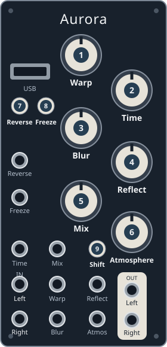

Dirt Verb 1.1
Driven reverb with optional chorus and pitch shifting. Only the exact
DirtVerb 1.1.bin is supported by the current source build.

Knobs
| Panel knob | Function |
|---|---|
| 1 Warp | Decay / feedback |
| 2 Time | Overdrive |
| 3 Blur | Damping |
| 4 Reflect | Chorus rate |
| 5 Mix | Dry/wet balance |
| 6 Atmosphere | Pitch-shifter mix |
Buttons
| Button | Function |
|---|---|
| 7 Reverse | Toggle chorus |
| 8 Freeze | Toggle pitch shifting |
Details & sources
- Running LEDs: gold at infinite feedback; white when overdrive is bypassed;
red increases with drive. These are not selector menu colors. - Shift, CV and gate behavior is not documented in the supplied author notes.
- Launch programs application QSPI. Menu re-entry requires ready USB media
containing AuroraSwitch as the only root BIN; reset alone is not a recovery guarantee. - Controls come from community-supplied author notes, not a reviewed source build.
Physical handoff and stock USB recovery remain unverified.